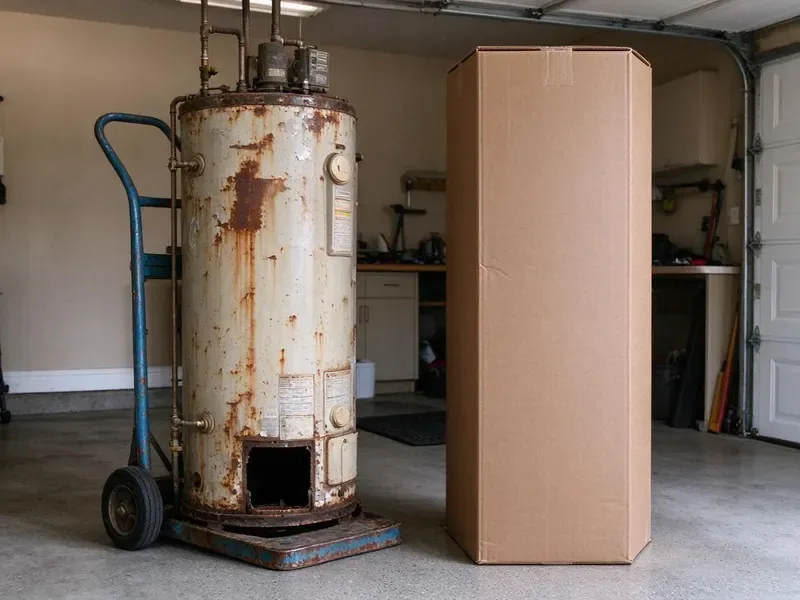
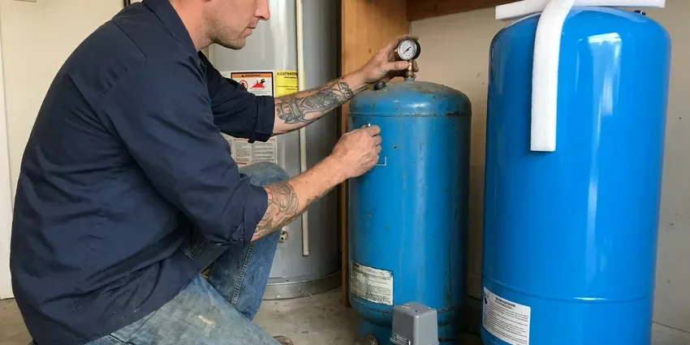

Plumbing Replacement in Dunwoody, GA
HGR Plumbing hauls away the old equipment on every replacement in Dunwoody, GA, tanks, pumps and all.
- Tested Before We Leave
- Local Crews
- Code Upgrades Included
- Workmanship Warranty

Get a Replacement Estimate in Dunwoody, GA
Read us the label on the old unit and we can rough out a price by phone.
Plumbing Replacement in Dunwoody, GA From HGR Plumbing
HGR Plumbing handles full-service replacements across Dunwoody, GA, from water heaters and softeners to sewer and water lines. Each job goes in to today's code, which often adds parts the old install skipped, such as an expansion tank, a pan or a sediment trap. Old installs often fall short.
Our expertise includes:
- Code upgrades like expansion tanks added
- Water softener and control valve replacement
- Tank and tankless water heater replacement

Additional Plumbing Replacement Services in Dunwoody, GA
When repairs are no longer enough, our replacement services in Dunwoody, GA deliver durable upgrades that restore full performance.


Customers
Why Choose HGR Plumbing for Plumbing Replacement in Dunwoody, GA?
Every HGR Plumbing crew looks at what is in the ground first, since sewer and water line jobs depend on it. The southern coastal plain has looser, sandy soil and a higher water table, so drainage and root intrusion are bigger concerns there than shifting. We pick materials for that. Buried lines get bedded in sand or fine fill, and we choose pipe that can flex a little with ground movement instead of cracking at the first shift.
- Local Crews, Plumbers who know local code and local houses.
- Skilled Techs, Crews trained on gas, water and drain every week.
- Repair Price Too, We quote the repair option alongside the replacement.
Citywide Coverage
Homes all over Dunwoody have had plumbing replaced by our crews, from older houses with galvanized pipe to newer homes with failing poly. Every house gets its own quote based on its equipment, layout and access, since two homes on one street can need very different work. No two jobs match.
Experienced Team
Our plumbers replace water heaters, pumps, softeners and pipe every week and know what holds up to Georgia conditions. They plan around layout, access and existing connections, so new equipment fits the space and future service is simple, not a fight with tight clearances. Service access matters.
Safety-First Approach
Our crews follow Georgia plumbing code on every job, plus each manufacturer's installation rules. Code sets the minimum, but equipment makers add their own requirements on clearances, venting and water quality, and following both keeps the system safe and the warranty in force. Both matter.
Trusted Certified Dunwoody Plumbing Services Professionals
At HGR Plumbing, we are proud to offer certified plumbing services throughout Dunwoody, GA. Those papers on the wall mean something. Our plumbers hold recognized industry credentials, and they follow strict safety and quality rules on every repair, installation and maintenance call we run.
Call Us Now PHCC Plumbing Contractor Recognition
PHCC Plumbing Contractor Recognition Better Business Bureau (BBB) Accreditation
Better Business Bureau (BBB) Accreditation Angi Certified Pro
Angi Certified Pro ISO 9001 Quality Management Certification
ISO 9001 Quality Management CertificationPlumbing Replacement in Dunwoody, GA
Water Heater Replacement in Dunwoody
Water heaters in Dunwoody that leak from the tank, rumble on every heat cycle or run out of hot water halfway through a shower are usually cheaper to replace than to keep repairing. Tank leaks are not repairable. We match the fuel and size, update the venting and add an expansion tank or drain pan if code calls for one. Most swaps take a few hours.

Water Line Replacement in Dunwoody, GA
A leaking water service line wastes water around the clock and can soften the soil next to the foundation. In Dunwoody, GA, we swap old galvanized, poly or failing copper service lines for PEX or copper from meter to house, plus a new full-port main shutoff. One day covers most.
Gas Line Replacement in Dunwoody
Old black iron or corroded gas lines in Dunwoody homes can leak at threaded joints, and a gas leak is not something to wait on. Smell gas? Leave the house and call the gas company from outside, and once it is safe we replace the bad section or the full run, test it and relight everything. Testing comes before relight.
Sewer Line Replacement in Dunwoody
Sewer lines in Dunwoody fail from roots, cracks, collapses and bellies where the pipe sank and now holds waste. The southern coastal plain has looser, sandy soil and a higher water table, so drainage and root intrusion are bigger concerns there than shifting. We run a camera first. The video shows where and how badly the line failed, so you can see whether a spot repair, a liner or full replacement fits best.
Repair vs Replacement Cost Comparison in Dunwoody, GA
A common rule of thumb says replace once a repair passes half the cost of new, or when the part is near the end of its life. A 12-year-old water heater with a bad gas valve is a good example, since the valve might cost a third of a new heater and the tank behind it is already close to failing in most homes. You get both numbers.
Sump Pump and Well Pump Replacement in Dunwoody, GA
A dead sump pump during a storm floods a basement fast, and a dead well pump means no water at all. In Dunwoody, GA, sump pumps get sized for inflow with a check valve and an optional battery backup, while well pumps get matched to depth, flow and switch settings. We run each one through cycles.
Tankless Water Heater Replacement in Dunwoody, GA
Switching to tankless during a replacement is common in Dunwoody, GA, but it is a bigger job than a tank swap. The gas draw can be four times a 40-gallon tank, so the meter line usually gets upsized, and the venting moves from B-vent to stainless or PVC. We price both up front.

Well Pump & Pressure Tank Replacement in Dunwoody
Rural homes around Dunwoody that run on a well have no water at all when the pump quits. The old pump comes up, wire and drop pipe get checked, and the new pump goes in at the right depth, often with a new tank and switch too. Water is usually back that day.
Replacement Plumbers Near You in Dunwoody, GA
Our crews replace plumbing in Dunwoody most days of the week, so we have seen most local house types. Older homes with galvanized and clay, eighties and nineties homes with poly, and rural homes on wells all need different work, and knowing that makes our estimates accurate. Fewer surprises mid-job.
Thinking a replacement might be due? Set up a no-cost walk-through with our local crew. We check age and condition, ask about past repairs, and hand you a repair price and a replacement price before leaving. No pressure either way.
HGR Plumbing at a Glance
- Fully licensed plumbing team covering Dunwoody, GA
- Same-day appointments and 24/7 emergency response
- Upfront, flat-rate pricing before work begins
- 4.9-star rated by 357+ Georgia customers
Dunwoody Map
Dunwoody Information
- Population
- 51,713
- Area codes
- 470/770/678
- Service area
- Dunwoody and towns within a 40 mile drive
- Nearby
- Sandy Springs, Brookhaven, Roswell, Johns Creek
Old pipe, hard water buildup and ground movement work against every plumbing system, and replacement in Dunwoody, GA is usually cheaper than the third repair.
Expert Services
Reach out to HGR Plumbing for reliable plumbing work done by licensed pros in Dunwoody, GA.
Our Specialized Plumbing Services in Dunwoody, GA
At HGR Plumbing, we handle the full list of plumbing services across Dunwoody, GA. We go from leak detection all the way to full system installations, for homes and commercial buildings, and we do it quickly at a fair price. Explore our core services below:


How a Replacement Job Runs in Dunwoody, GA
What happens from the phone call to the final test on your replacement.
In-Home Estimate
Call (770) 470-3778 to book an estimate. We price the repair and the replacement in writing.
Remove and Replace
We take out the old equipment and install the new unit. Code upgrades go in at the same time.
Test and Review
After testing, we show you how the new equipment works. We point out each valve.
Frequently Asked Questions About Plumbing Replacement in Dunwoody
Prices vary with the type of work. A water heater replacement might run $1,400 to $3,500, a whole-home repipe $4,000 to $15,000, and a well pump or pressure tank $1,200 to $3,500, with code upgrades, access and permits moving each one up or down. The quote is written.
Two to four hours on most tank swaps. Code upgrades or a relocation can add time.
Bradford White, Rheem and AO Smith heaters, Rinnai and Navien tankless, and proven softeners and well pumps. The job decides the brand.
Both last for decades and resist corrosion. PEX is flexible, uses fewer fittings and tolerates freezing better, while copper is rigid, handles heat well and has a long track record, and both restore the pressure that old galvanized pipe loses as it fills with rust. We help you pick.
Some fixture swaps, yes. Water heaters, sewer lines, gas lines and repipes involve gas, venting, code and permits, and a mistake on any of them can mean a gas leak, flooding or a failed inspection that costs more to fix than the labor you saved. Call a licensed plumber.
For many jobs, yes. Water heaters, sewer lines, gas lines and whole-home repipes usually need a permit and an inspection, and the inspector has to see the work before walls or trenches are closed. We handle both.
Equipment carries manufacturer warranties, often 6 to 12 years on water heaters. We also warranty our labor.
Labor is covered by our written warranty, and materials by their makers. The estimate shows the terms for each item.
What Our Customers Say About Our Plumbing Experts

Diane F.
My kitchen faucet had dripped for months and I finally got tired of hearing it at night. HGR Plumbing came out the next morning, replaced the cartridge and the O rings, and tightened a loose base that was letting water under the sink.
Faucet Repair · Dunwoody, GA
Laura S.
Our 40 gallon tank started leaking from the bottom after thirteen years. The tech hauled the old one out, set a new unit with a fresh expansion tank, and had hot water running in about four hours. He took the old tank with him too.
Water Heater Replacement · Smyrna, GA
Nathan E.
Our tankless heater kept throwing an error code and shutting off mid shower. The tech flushed the heat exchanger, which was full of scale, and replaced a bad flow sensor. Hot water has been steady for half a year now.
Water Heater Repair · Alpharetta, GA
Marcus H.
Grease from the fryer line kept clogging the kitchen drain at my diner. HGR Plumbing hydro jetted the line after closing, showed me the buildup on camera, and set us up on a quarterly cleaning so it does not catch us on a Friday again.
Drain Cleaning · Smyrna, GACarlos V.
Our house still had galvanized pipe, and upstairs the shower was a trickle. The crew repiped everything in PEX over three days and patched every drywall hole before they left. The pressure difference is night and day.
Repiping · Alpharetta, GA
Emily R.
The shutoff valve under our kitchen sink snapped off in my hand on a Sunday morning. HGR Plumbing had someone out by early afternoon. He replaced both angle stops with quarter turn valves and showed me where our main shutoff was, which I honestly did not know.
Plumbing Repair · Alpharetta, GA